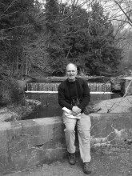

Please note: the AAS Obituaries are temporarily being hosted on this website while their full content is being ingested into the PubPub publishing platform newly adopted by the Bulletin of the American Astronomical Society. When the migration is complete, your existing links will take you to the final, migrated content. Contact peter.williams@aas.org with any questions.
James N. Kile (1958-2007)
James N. Kile, of Needham Heights, Massachusetts, died on 17 August 2007, following a brave two-year battle with cancer.
One of three children of David R. Kile and Betty Jane Kile, Jim was born in Niagara Falls, New York, on 20 April 1958 and lived in the nearby village of Lewiston before his family settled in Alden, an hour east of Niagara Falls, when Jim was nine. Jim's father worked for American Telephone and Telegraph for 37 years, and his mother was a homemaker.
Jim earned his Bachelor's degree in Physics from Rensselaer Polytechnic Institute in 1980, a Master's degree from Northwestern University in 1982, and a Doctorate from Tufts University in 1996 under the direction of Robert Willson. His thesis involved comparison of radio data from the Very Large Array and the Russian RATAN 600 telescope with Yohkoh soft X-ray data, with an emphasis on understanding the relationship between solar noise storms and coronal magnetic fields. While working on his thesis, Jim collaborated with one of us (EWC) at the Air Force Research Laboratory on an investigation of the 154-day periodicity in solar flares. The resulting publication (ApJ 370, 442, 1991) is his most cited work. Jim co-authored four other papers in refereed journals. Jim's professional affiliations included the American Astronomical Society, the American Institute of Aeronautics and Astronautics, the American Geophysical Union, and the Astronomical Society of the Pacific.
Jim worked as a contractor in the defense industry from 1982 until the time of his death, settling in the Boston area in the early 1980s. He worked for Calspan Corporation from 1982-1989, the Ultra Corporation from 1989-1994, and the Riverside Research Institute from 1994-2007. He was a highly-respected expert in radar systems, including radar data and systems analysis, systems engineering, and planning support for radar acquisition programs and technology development. The work entailed frequent extended travel to Norway for system testing.
During the summer of 1997 Jim was an instructor for introductory physics laboratories at Simmons College, and in 2002 he developed and taught a synthetic aperture radar measurement and signature intelligence course for the Air Force Institute of Technology in Dayton, Ohio, where he was appointed Adjunct Assistant Professor of Physics in the Department of Engineering Physics, a position he held until 2005. On the local level, Jim assisted in astronomy education projects, such as nighttime telescope viewing, in the Needham public schools and stargazing/astronomy courses at several Massachusetts Audubon wildlife sanctuaries.
Jim met the love of his life in the mid-1980s, and he and Elaine were married within the year, on 19 October 1985. They shared a passion for birding and a love for nature witnessed up close when hiking, kayaking, snowshoeing, and cross-country skiing. Jim had a wide range of interests. He was an accomplished folk musician, playing the guitar and ukulele. He was a devoted "Trekkie" who could quote every line from early Star Trek episodes and was a life member of the American Radio Relay League [ARRL].
Jim had the warm and open personality characteristic of those raised in the snow-belt. He was always good company. His courage as he was dying, much too soon, was a great source of strength for his family.
Jim is survived by his wife Elaine C. (Smith) Kile, his father David R. Kile, his sister Diane Kile and her husband David Galson, his brother David M. Kile and his wife Susan Kile, and four nephews, one niece, and a great niece and nephew. He was predeceased by his mother Betty Jane Kile.
Obituary written by: Edward W. Cliver (Air Force Research Laboratory), Kenneth R. Lang (Tufts University), Robert F. Willson (Tufts University)
BAAS Citation: BAAS, 2009, 41, 570
SAO/NASA ADS Bibcode: 2009BAAS...41..570C